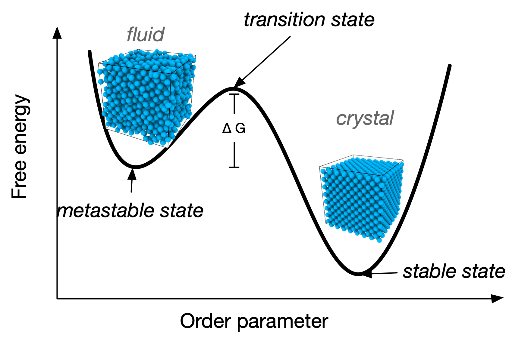
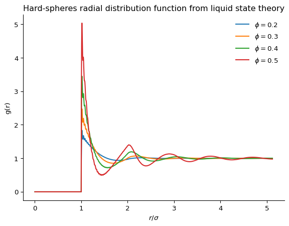

15 Colloids
15.1 Kinds of colloids
Colloids are mixtures where one substance is dispersed throughout another. They consist of particles that are larger than typical molecules but small enough to remain suspended without settling. Examples include milk, fog, and paint.
Colloids can be classified based on the state of the dispersed phase and the dispersion medium. Depending on the particular mixture, one can obtain a wide variety of soft materials, with unique mechanical, optical, and thermal properties.
| Dispersion Phase | Dispersion Medium | |
|---|---|---|
| Solid | Liquid | |
| Solid | Solid suspension: pigmented plastics, stained glass, ruby glass, opal, pearl |
Sol, colloidal suspension: metal sol, toothpaste, paint, ink, clay slurries, mud |
| Liquid | Solid emulsion: bituminous road paving, ice cream |
Emulsion: milk, mayonnaise, butter, pharmaceutical creams |
| Gas | Solid foam: zeolites, expanded polystyrene, ‘silica gel’ |
Foam: froths, soap foam, fire-extinguisher foam |
Clearly, colloidal materials form an incredibly diverse class, and surround us in our everyday lives. Here are some visual examples from the table above:
The IUPAC definition of colloids is based on the idea that the particles are dispersed in a medium, creating a subdivision at the colloidal scale: approximately 1nm to 1µm.
The small sizes of colloids means that they are constantly subject to the collisions with the atom/molecules/particle of the medium, triggered by thermal fluctuations. Due to this, the colloids undergo Brownian motion. For each particle, the amount of energy received from the medium is of the order of \(k_B T\) (the reference energy scale of thermal soft matter). This energy can be compared with the the potential energy to produce a dimensionless number, the gravitational Péclet number
\[{\rm Pe}_g = \dfrac{\Delta m g R}{k_B T}\]
where \(R\) is the radius of the colloid respectively, \(g\) is the acceleration due to gravity, and \(\Delta m\) is the buoyant mass, which for a spherical colloid is expressed as \(\Delta m = \dfrac{4\pi}{3}\Delta\rho R^3\), with \(\Delta \rho\) being the density difference between the particle and the dispersion medium (the solvent). We have a colloidal suspension only when \({\rm Pe}_g \lesssim 1\), i.e. when Brownian motion is only marginally perturbed by the effects of gravity.
15.2 Stability of colloids and colloid-colloid interactions
A colloidal dispersion is said to be stable if it is able to remain dispersed and Brownian for a long time (typically, significantly longer than the experimental observation time). Unstable colloids undergo aggregation or sedimentation due to the dominance of attractive forces or gravity.
For example, consider a colloidal suspension like milk. Milk is an emulsion where fat droplets are dispersed in water and stabilised by proteins. If lemon juice (an acid) is added, the dispersion medium (water) changes, the pH drops, and the emulsion is destabilised. This causes the proteins to coagulate, leading to the separation of curds (solid) and whey (liquid).
It is clear from this example that the nature of the dispersed phase and the dispersed medium ultimately determine the stability of colloidal dispersions. What ultimately matters for the stability is whether the colloids have a propensity to aggregate or not. This propensity is quantified in terms of colloidal interactions.
15.2.1 Fundamental and effective forces
At the colloidal scales, only two kinds of fundamental forces are relevant: gravity and electro (and occasionally magneto) static forces. As we have seen above, when a system is truly colloidal, gravitational contributions are assumed to be small, so in effect for a non magnetic colloid (which is the vast majority of colloidal systems) only electrostatic forces are fundamentally important.
However, colloidal dispersions consist of large particles carrying many charges both in the dispersed phase and the surrounding medium, arranged disorderly at the atomic scale. This makes a microscopic description of all charges and the resulting electrostatic fields not only unfeasible but also ineffective for understanding colloidal systems in terms of key characteristics such as particle size, density, and spatial distribution. The fundamental issue is the one of time-scales: the motion of colloids is much slower than the motion of individual ions or molecules. Over such longer timescales, many interactions at the microscopic atomistic scale take place and we can think of taking averages to extract macroscopic, effective interactions at the colloidal scale 1.
This is especially important due to quantum fluctuations: the uncertainty principle means that electron clouds around atoms are not fixed but exhibit intrinsic fluctuations in their charge distribution. Perturbative approaches allow us to capture the effective forces resulting from such fluctuations.
There are many examples of such effective forces (Lekkerkerker, Tuinier, and Vis 2024). One you may already know is the Van der Waals interaction. For colloids, we have additional relevant forces, such as the double layer interaction and the depletion interaction. We detail them here below.
15.2.2 Van der Waals interaction
The London-van der Waals dispersion forces arise from the interaction between instantaneous dipoles in overall neutral atoms or molecules. We know from classical electrostatics that static dipoles interact via the dipole-dipole interaction, with a potential strength which decays like \(1/r^3\), where \(r\) is the separation between two dipoles.
More in general, neutral atom or molecules have electronic clouds that are fluctuating and not symmetrically distributed, creating a temporary dipole. Such instantaneous dipole induces a dipole in a neighboring atom or molecule by distorting its electron cloud.
The interaction energy between two dipoles \(\mu_1\) and \(\mu_2\) separated by a distance \(r\) is proportional to: \[ U \propto -\frac{\mu_1 \mu_2}{r^3} \]
The dipole moments fluctuate due to quantum mechanical effects. The average interaction energy is derived using perturbation theory and is proportional to the polarisabilities \(\alpha_1\) and \(\alpha_2\) of the two particles:
\[ U(r) = -\frac{C}{r^6} \]
where \(C \propto \alpha_1 \alpha_2\) depends on the polarisabilities and ionization energies of the particles.
The resulting \(r^{-6}\) dependence is also referred to as the London dispersion force, which can be derived within quantum-mechanical perturbation theory (London 1937).
We can then assume to take two identical spherical colloids of radius \(R\) at distance \(h\) and that every volume element of such spheres interacts with the London dispersion force (see the semi-classical approach of Hamaker Hamaker (1937) for illustration). Integrating over all volume elements yields the collodial spheres Van der Waals attractive potential in the form
\[W_{wdW}(h)=-\dfrac{A-H}{g}f(h/R)\]
where \(A_H\) is the Hamaker constant and \(f(h/R)\) is
\[f(h/R) = \left[ \frac{2R^2}{h^2 - 4R^2} + \frac{2R^2}{h^2} + \ln\left( \frac{h^2 - 4R^2}{h^2} \right) \right]\]
Each volume element in one sphere interacts with each in the other sphere via:
\[ \phi(r) = -\frac{C}{r^6} \]
So the total interaction energy is:
\[ U(h) = -C \iint \frac{1}{|\mathbf{r}_1 - \mathbf{r}_2|^6} \, dV_1 \, dV_2 \]
Let:
- Sphere 1 be centered at \((0, 0, 0)\),
- Sphere 2 be centered at \((0, 0, h)\),
- \(\mathbf{r}_1 = \mathbf{r}\), \(\mathbf{r}_2 = \mathbf{r}'\)
Then \(|\mathbf{r}_1 - \mathbf{r}_2| = |\mathbf{r} - \mathbf{r}'|\), and the integral becomes:
\[ U(h) = -C \iiint_{|\mathbf{r}| \leq R} \iiint_{|\mathbf{r}' - h\hat{z}| \leq R} \frac{1}{|\mathbf{r} - \mathbf{r}'|^6} \, d^3\mathbf{r} \, d^3\mathbf{r}' \]
Hamaker evaluated this by integrating over the densities of interacting atoms with number density \(\rho\) in both spheres. The result:
\[ U(h) = -\rho^2 C \iint \frac{1}{|\mathbf{r}_1 - \mathbf{r}_2|^6} \, dV_1 \, dV_2 \]
Defining the Hamaker constant:
\[ A_H = \pi^2 \rho^2 C \]
So,
\[ U(h) = -\frac{A_H}{\pi^2} \iint \frac{1}{|\mathbf{r}_1 - \mathbf{r}_2|^6} \, dV_1 \, dV_2 \]
This six-dimensional integral can be evaluated analytically for spheres, yielding:
\[ U(h) = -\frac{A_H}{6} \left[ \frac{2R^2}{h^2 - 4R^2} + \frac{2R^2}{h^2} + \ln\left( \frac{h^2 - 4R^2}{h^2} \right) \right] \]
Van der Waals interactions are considered to be short-range forces in the sense that their decay rate(e.g. London’s \(1/r^6\)) is much faster than Coulombic interactions (\(1/r\)). Importantly, since their origin resides in the fluctuation of charges on the colloids, their strength is not additive: simply summing all the pairwise interactions does not fully accurately account for man-body effects. We often rely on such two-body approximations, but we should be aware that they are a simplified scenario.
15.2.3 Double-layer interaction
Colloids are often charged. The solution they are immersed also has an inhomogeneous distribution of ions: there will be
co-ions (same charge as the colloid) that will be pushed away from the colloid surface, while
counter-ions (opposite charge) will accumulate at the surface.
These two different concentrations of oppositely charged ions form what is called a double layer and its property (such as its width) are obviously controlled by the number of ions in the solvent, which can be tuned by adding or removing, for example, salts.
Suppose we now have two colloids of the same size and charges in the solvent. Th charges in their double layers will interact giving rise to a repulsive interaction. This interaction is referred to as screened-Coulomb (as the electrostatic interaction is screened by the presence of the ions or double layer repulsion. We are not going to derive it, but it can be shown that, for a colloid of radius \(R\) in solvent with salt density \(n_s\) it can approximated by an exponential decay
\[ W_{DR}(h) = B\dfrac{R}{\lambda_B}\exp{(-h/\lambda_D)} \]
where \(\lambda_D\) is called the Debye length
\[ \lambda_D = \sqrt{\dfrac{1}{8\pi\lambda_B n_s}} \]
while \(\lambda_B\) is the Bjerrum length, which is itself derived from the characteristic distance at which two elementary charges have energy \(k_B T\) 2
\[ \lambda_B = \dfrac{e^2}{4\pi \varepsilon_0\varepsilon_r k_B T} \]
The coefficient \(B\) is a material properties that depend on the surface potential. We are not going more into the details of these features, which are important for the design of colloidal experiments.
From our point of view, what matters is that identical colloids in solution appear to have two interactions of opposite sign
a van der Waals components, typically attractive and emergent from induced dipole -dipole ineractions emerging from quantum fluctuations of the electronic clouds
a double layer component, repulsive in nature, and resulting from the electrostatic repulsions induced by ions and counterions
The sum of the two gives rise to the DLVO (Derjaguin–Landau–Verwey–Overbeek) interaction which is an elementary model for colloid stability and aggregation.
Modify the script above and test graphically that:
- When the salt concentration is low, the double layer repulsion dominates the DVLO interaction
- There are salt concentrations where two minima occur in the DLVO potential: on at very close distance (dominated by the Van der Waals attraction) and one, much shallower, at intermediate distances comparable to \(2(R+\lambda_D)\) . This minimum can lead to weak aggregation of colloids
- Large salt concentrations depress the DVLO maximum altogether and eventually the Van der Waals interaction dominates.
15.2.4 Steric interactions and depletion interactions
We have seen that quantum fluctuations from the uncertainty principle can be recast via a semi-classical approach into effective short-range interactions (van-der Waals). Another fundamental quantum principle – Paulis’s exclusion principle – is also at the source of key effective interactions that can be understood in a semi-classical picture. Indeed, the main consequence of the exclusion principle is that since electrons cannot occupy the same quantum state, there are minimal distances below which atoms cannot be brought together.
This simply means that as we take a pair of atoms, below a certain distance they repel each other with very strong forces, even in the absence of double layer interactions. These repulsive interactions can be approximated in various ways: their strength depends on the details of the atoms and hence, in the case of colloids, on the details of the materials composing the colloids. We call these excluded volume interactions steric interactions3.
These fundamentally repulsive interactions mean that that, in a system with \(N\) colloids, an additional \(N+1\) colloid does not have access to the entire configuration space: there is a large excluded volume due to the presence of the other colloids.
What is intriguing of these interactions is that, even if they are purely repulsive, they can collectively give rise to effective attractive interactions: attraction through repulsion.
15.2.4.1 A simple example: particles in a one-dimensional line (hard rods)
As an introductory example, let us consider a very simple, idealised system of purely repulsive objects. Let us confine them along a one dimensional line, bounded by hard (repulsive and impenetrable) walls seperated by the distance \(L\). Assume the objects to be \(N\) spheres of diameter \(d\), or (equivalently) hard rods of length \(d\). They cannot overlap so, once they are placed along the line, their order cannot change.
What we want to know is how these hard objects, that interact solely via repulsive interactions, distribute themselves along the line. The problem is a classic of statistical mechanics and thanks to its one-dimensional nature can be addrssed extensively using analytical methods.
Here we take a more algorithmic approach, and directly sample the probability density distribution \(\rho(x)\) of finding a particle center at position \(x\).
To do so, we do the following:
- position the particles in a valid configuration (no overlaps with other particles or the walls)
- pick a particle at random
- move it slightly along the line
- test the if the new position is valid (no overlaps)
- if valid, accept the move otherwise, reject
- go back to (2)
This very simple algorithm is based on a trial move and an acception/rejection step. This is the heart of a very popular molecular simulation method, named Metropolis Monte-Carlo Chain method.
Here below you have a very simple implementation in python.
The code should produce a final probability distribution along the \(x\) axis. The main control parameter here is the packing fraction, i.e. \(\phi = \dfrac{dN}{L}\), the coverage of the line. If you take high values for the packing fraction you will obserbve an interesting effect: the distribution \(\rho(x)\) displays distinctive modulations. Surely, these reflect the layering of the particles along the line, due to their hard-core interactions. However, the oscillations are even more interesting as we observe that the particles are morelikely to be found near the walls than away from them.
Reflect on this point. In the complete absence of any attractive interactions, we find that the hard particles are preferentially located close to the walls. It is as if the walls exerted an attractive force capable of pulling the particles close to them. In reality, the force is purely statistical in nature. It ismerely the result of the entropic advantage that the entire system acquire when the particles are closer to the walls: simply put,if the first (and last) particles are close to the walls, there is more space for the particles in the middle, hence a larger number of configurations and hence larger configurational entropy.
Even if the force is statistical, it is not less real: in this simplified case, it leads to the layering of the density profile. Its generalisation to less idiealised conditions leads to a family of forces that are essential for the aggregation of soft matter which are called depletion interactions.
15.2.5 Asakura-Oosawa depletion potential
The simple unidimensional scenario can be extended to a more interesting situation of hard-core colloidal particles dispersed in a medium where other smaller, repulsive particles (e.g. coiled polymers) are also dispersed. It is not important atthistage to know the details of such polymeric structures. We will ignore their internal structure and we wil also ignore their mutual interactions. We will only consider for the moment how they interact with the colloids and how this mediates an interaction between the colloids. We call these idealised polymers penetrable hard spheres.
This assumption yield a great simplification: the polymers, on their own, are an ideal gas. Their chemical potnetial is given by
\[\mu = k_BT \ln \eta_b \tag{15.1}\]
We assume also to work in an ensemble at fixed volume \(V\), temperature \(T\) and chemical potential \(\mu\): this is the grand canonical ensemble. This means that we imagine that there is some ideal reservoir with which we can exchange polymers in order to maintain the chemical potential constant.
The grand potential for such ideal polymers is given by
\[\Omega = -k_BT e^{\mu/k_B T}V_{\rm accessible}\]
where \(V_{\rm accessible}\) is the accessible volume. In the absence of the colloids, the entire volume \(V\) is accessible.
Let’s image to intrudce two colloids at separation \(r\). For all \(r> 2(R+\delta)=R_d\), the accessible volume is \(V_{\rm accessible}^{\infty}=V-2V_{\rm exclusion}\), where \(R_d\) is the depletion radius and \(V_{\rm exclusion}\) is the inaccessible region due to the colloid-polymer interaction around each colloid:
\[\begin{aligned} V_{\rm exclusion}& = V_{\rm outer}-V_{\rm inner}\\ &= \dfrac{4\pi}{3}\left((R+\delta)^3-R^3\right) \end{aligned} \]
Changing the separation between the two colloids but maintaining \(r>2R_d\) does not change the grand potential: there is no free energy advantage and hence no effective interaction.
Instead, it is only when we take the colloids closer than \(2R_d\) that we see a free energy difference. When \(r<2R_d\) (and, obviously, \(r>2R\)) an overlap region is formed (the lens-shaped region of tha figur above). Its volume can be calculated simply from geometrical considerations and it is \[ V_{\mathrm{overlap}}(r)=\dfrac{4 \pi}{3} R_d^3\left[1-\frac{3}{4} \frac{r}{R_d}+\frac{1}{16}\left(\frac{r}{R_d}\right)^3\right] \tag{15.2}\]
Th new accessible volume is \[V_{\rm accessible}\prime=V-2V_{\rm exclusion}+V_{\mathrm{overlap}}\]. The interaction between the two colloids resulting from the free energy adgvantage is called potential of mean force \(W(r)\). It is expressed as
\[ \begin{aligned} W_{\rm AO}(r) = \Omega(r)-\Omega^{\infty} & =-k_BT e^{m/k_B T}\left(V_{\rm accessible}(r)-V_{\rm accessible}(\infty)\right)\\ & = -k_BT e^{m/k_B T}\left[V-2V_{\rm exclusion}+V_{\mathrm{overlap}}(r)-(V-2V_{\rm exclusion})\right]\\ & = -k_BT e^{m/k_B T} V_{\mathrm{overlap}(r)} \end{aligned} \]
We can now re-use the ideal polymer chemical potential definition Equation 15.1 and the gemoetrical expression for \(V_{\mathrm{overlap}}\) in Equation 15.2 to finally write the Asakura-Oosawa potential
\[ W_{\rm AO} (r) = - \dfrac{4 \pi \eta_b k_B T}{3} (R+\delta)^3\left[1-\dfrac{3}{4} \dfrac{r}{R+\delta}+\frac{1}{16}\left(\dfrac{r}{R+\delta}\right)^3\right] \quad 2R\leq r< 2R+\delta \]
taking \(q = \delta / R\) (the polymer-to-colloid size ratio), so \(R+\delta = R(1+q)\) and \(r/(R+\delta) = r/[R(1+q)]\) the AO potential can also be rewritten as:
\[ W_{\rm AO}(r) = -\frac{4\pi \eta_b k_B T}{3} [R(1+q)]^3 \left[1 - \frac{3}{4} \frac{r}{R(1+q)} + \frac{1}{16} \left(\frac{r}{R(1+q)}\right)^3 \right] \quad 2R \leq r < 2R(1+q) \]
When the colloids are so close the polymers cannot enter the lens-shaped region between the two colloids. This gap leads therefore to an uniform distribution of polymers which results in an pressure difference: the outer polymers push the colloids together, producing an effective attractive force. Such pressure resulting from an uncompensated concentration gradient is called osmotic.
The lens-shaped overlap region between the two colloids consists of two identical spherical caps, each subtending an angle \(\theta_0\) at the center of the colloid. From the given geometry, the angle is such that \[\cos\theta_0 = \dfrac{r}{2R_d}.\]
The uncompensated pressure acts on such surface.
For symmetry reasons, only the forces along the axis connecting the wto spheres contribute to the total force. For a given angle \(\theta\) the components is proportional to \(P\cos\theta\) where \(P\) is the pressure exerted by the ideal gas of polymers is simply \(P=\eta_b kT\) where \(\eta_b\) is the polymer concentration. The surface element on which this pressure acts for a small increment \(d\theta\) is \[dS = 2\pi R_d^2\sin\theta d\theta\]. Integrating over the range \([0,\theta_0]\) yields the total force \(F_d\)
\[ \begin{aligned} F_d(r) &= -2\pi \eta_b k_B T R_d^2 \int_0^{\theta_0} \sin\theta \cos\theta \, d\theta \\ &= -\pi R_d^2 \eta_b k_B T \left[1 - \left(\frac{r}{2R_d}\right)^2\right] \end{aligned} \]
Notice the negative sign, chosen to reflect the fact that the force is attarctive.
Integrating the force yields the interaction potential.
| Interaction Type | Description | Range |
|---|---|---|
| Van der Waals | Attractive forces arising from induced dipoles between particles. | Short-range |
| Double Layer | Electrostatic repulsion due to overlapping electrical double layers around charged particles. | Long-range |
| DLVO | Combination of van der Waals attraction and double layer repulsion. | Short and long range |
| Depletion | Typically attractive interactions emerging from purely entropic interactions | Short range |
15.3 Colloids as big atoms
Colloids can be viewed as “big atoms”: they are large particles suspended in a medium, exhibiting thermal motion and interactions in various ways analogous to atoms, but at much larger length and time scales. As we have seen above, the interactionsa can have statistical or even quanto-mechanical origina, but are ultimately cast in a classical form that is amenable to a classical treatment. At the same time, the large scales of colloids mean that via dedicatated microscopy techniques one is able to identify individual colloids, study theiur arrangements in detail, and follow their dynamics.
As mentionedearlier, there is a huge variety of colloids and a vast literature characterising their properties but also producing theoritical and computational models.
Here we focus on the most elementary model of a colloid. The simplest such exammple is the purely repulsive hard-sphere colloid. While an idealisation, quasi-hard-sphere colloids can be prepared in the laboratory by various techniques (see Royall et al. (2024) ). This includes by synthesizing a spheres of bundled polymers (you will learn about polymers in the next chapter) such as polymethyl methacrylate (PMMA), but also simply silica (small sphere of non-crystalline \(\rm Si O_2\)) micron-sized beads carefully treated to screen and minimize the electrostatic interactions that would lead to DLVO-like contributions.
15.3.1 The archetype: hard-spheres
A hard-sphere is an idealized particle model in which each particle is represented as a perfectly rigid sphere of fixed radius \(R\) and diameter \(\sigma=2R\). Hard spheres interact only through excluded volume: they cannot overlap, but otherwise experience no attraction or repulsion. The interaction potential \(U(r)\) between two hard spheres separated by a center-to-center distance \(r\) is:
\[ U(r) = \begin{cases} \infty & \text{if } r < \sigma \\ 0 & \text{if } r \geq \sigma \end{cases} \]
This model captures the essential physics of excluded volume which, as we said earlier, fundamentally emerges from Pauli’s exclusion principle (electrons cannot occupy the same quantum state so electronic clouds of different atoms exclude each other).
Phase behaviour of hard spheres
Since the interaction potential is only based on excluded volume, the energy of hard spheres is trivial: it is always zero. A naive interpretation of such trivial energetics may lead to conclude that nothing interesting happens to a collection of hard spheres, since they always are at their energy minimum (namely, zero). However, it is clear from the earlier discussion of depletion forces that the interaction energy is only a part of the picture for systems subject to thermal fluctuations: indeed, for any \(T>0\), entropic contributions to the free energy are always present. In the specific case of a fixed number of hard spheres in a fixed volume, they are the only contribution to the free energy.
In this sense, hard-spheres are completely entropy-driven system. For a collection of identical (monodisperse) hard spheres the entropy is solely configurational and correspods to the number of possible arrangements. This constrained only by the accessible volume, of which we have seen an instance when considering the depletion interactions. Notice that changing the temperature does not really affect the statistics of the configurations: the Boltzmann factor \(e^{U(\mathbf{r}^N)/k_BT}\) is always \(1\) for all valid configurations. The only way we can change the state of the system is by varying the accessible volume. For a system of \(N\) identical hard spheres in a volume \(V\) this can only be done in two ways
- by adding more spheres (of the same kind)
- by varying the volume V
The two routes essentially amount to varying one single parameter, which is the packing fraction (also called, volume fraction) of the system, defined as
\[\phi = N\dfrac{v_{\rm sphere}}{V} = \dfrac{\pi \sigma^6 N}{6V}\]
which can also be expressed in terms of the number density \(\rho=N/V\) as \(\phi=\pi\sigma^3\rho/6\).
To change the phase behaviour of hard spheres we have a single control parameter, \(\phi\) meaning that (differently from fluids like water) we are bound to have one-dimensional phase diagram.
We explore the phase behaviour of hard spheres by considering different regimes of packing fraction.
Low packing fractions
The hard repulsion between hard spheres means that each sphere is surrounded by an excluded volume in which the center of other spheres cannot be placed. Since the distance of closest approach between two spheres is \(\sigma\) such excluded volume per particle is simply \(v_{\rm ex} =4\pi\sigma^3/3\) and it is much larger than the volume pert particle \(v= V/N\). A collection of \(N\) hard spheres has a total excluded volume \(V_{\rm ex}\neq N v_{\rm ex}\) simply because the excluded volumes of individual particles can in general overlap, as we saw earlier with the case of depletion.
At very low densities, most hard spheres isolated. So, in this case, we can approximate the roral excluded volume as \(V_{\rm ex} \rm N v_{\rm ex}\) so that the accessible volume (the volume not occupied by the spheres) is
\[V_{\rm accessible} = V-Nv_{\rm ex}\]
We use this to perform an appropriate statistical mechanical calculation for the Helmholtz free energy of system \(F\), which we know is purely entropic \(F=-TS\). The partition function \(\mathcal{Z}\) is
\[ \mathcal{Z} = \frac{1}{N! \Lambda^{3N}} \int_{V_{\rm accessible}} d\mathbf{r}_1 \ldots d\mathbf{r}_N \]
where \(\Lambda\) is the thermal de Broglie wavelength
\[\Lambda = h/\sqrt{2\pi mk_B T},\] and originates from the integration over the Maxwell-Boltzmann disribution of momenta for particles of mass \(m\), while \(h\) is Planck’s constant.
For hard spheres, the integral is over all configurations where no two spheres overlap (i.e., \(|\mathbf{r}_i - \mathbf{r}_j| \geq \sigma\) for all \(i \neq j\)), and \(V_{\rm accessible}\) is the total accessible volume. The results is that
\[\mathcal{Z} = \dfrac{(V-Nv_{\rm ex}/2)^N}{N!\Lambda^{3N}},\]
with the \(1/2\) factor coming from the fact that we avoid double counting the excluded volume of pairs. The entropy is \[ S = k_B \ln \mathcal{Z} = k_B \left[ N \ln(V - N v_{\rm ex}/2) - \ln N! - 3N \ln \Lambda \right] \]
From the partition function, we use Stirling’s formula \(\ln N! = N\ln N -N\) and obtain
\[ S = k_B \left[ N \ln(V - N v_{\rm ex}/2) - (N \ln N - N) - 3N \ln \Lambda \right] \]
which reads \[ S = N k_B \left[ \ln\left( \frac{V - N v_{\rm ex}/2}{N \Lambda^3} \right) + 1 \right] \]
The phase behaviour is encoded in the equation of state (the equation that links the three thermodynamics variables \(P,T\) and \(\phi\)). To obtain it, we calculate the pressure
\[P = -\left(\dfrac{\partial F}{\partial V}\right)_{N,T} =T\left(\dfrac{\partial S}{\partial V}\right)_{N,T}= \dfrac{k_B T }{v-v_{\rm ex}/2}\]
This expression can be simplified (do it as an exercise) to obtain the quation of state
\[Z_{\rm comp}= \dfrac{PV}{Nk_BT}=\dfrac{1}{1-4\phi} \quad (\phi\ll 1)\]
also known as the compressibility factor \(Z_{\rm comp}\). Since \(\phi\) is very small the expression is in fact
The choice of the letter “Z” is unfortunate. Do not confuse the compressibility factor with the partition function!
\[Z_{\rm comp} = 1+4\phi+O(\phi^2)\]
This expression makes it apparent that the first term linear in \(\phi\) is a correction to the ideal gas law. This is example (to very low order) of what is called the virial expansion. This, in general takes the form
\[Z_{\rm comp}= 1 + B_2 \rho + B_3 \rho^2+ \dots\]
where \(B_2, B_3, \dots\) are the virial coefficients and for systems that are not hard spheres they depend also on the temperature, \(B_2(T), B_3(T),\dots\). They are important as they encode the effects of correlations:
- \(B_2\) accounts for pairwise correlations (how the presence of one particle affects the probability of finding another nearby),
- \(B_3\) for three-body correlations, and so on.
Given an interaction potential the second virial coefficient \(B_2\) can be calculated independently from the equation state
\[ B_2(T)=-\frac{1}{2} \int_0^{\infty}\left(\exp \left(-\frac{U(r)}{k_B T}\right)-1\right) 4 \pi r^2 d r \]
For hard spheres this results in
\[ B_2 = \frac{2\pi}{3} \sigma^3 \]
which is exactly what is predicted by the equation of state above, once you recognise that \(\phi = \frac{\pi\sigma^3}{6}\rho\).
Exercise: check this calculation.
Higher-order coefficients become increasingly complex to compute and reflect more complex many-body corelations that can be established even if the interaction potential is purely twobody (as in the case of hard spheres). The higher order coefficients become mor eand more important as the packing fraction is increased. Eventually something surprising occurs at a sufficiently high volume fraction.
Dense packing: metastability and crystalisation
As we increase the packing fraction, the accessible (free) volume reduces rapidly. At some point, disordered packing of spheres are so tightly packed that thermal motion becomes extremely inefficient or even impossible. Such disordered (random) packing of spheres are described as jammed: they are so densely packed that they are no longer behaving like a fluid but they instead display some of the rigidity that we typically associate with solids. Such jammed configurations are indeed examples of amorphous solids. We will explore them more in detail in the chapter dedicated to arrested systems.
It is important to note, however, that the disordered packing at high volume fractions are not minima of the free energy. The densest possible packing of hard spheres is achieved by arranging them in a crystalline lattice. In three dimensions, the densest packings are the face-centered cubic (FCC) and hexagonal close-packed (HCP) structures, both of which have a maximum packing fraction of
\[ \phi_{\text{max}} = \frac{\pi}{3\sqrt{2}} \approx 0.74 \]
This means that, at most, about 74% of the available volume can be filled by the spheres, with the remainder being empty space. This result was conjectured by Kepler in 1611 and proved rigorously only in 1998 (the Kepler conjecture).
In contrast, random close packing (the densest disordered arrangement of spheres) yields a lower packing fraction, typically around \(\phi_{\text{rcp}} \approx 0.64\). Notice that this value is approximate and variations can be observed (due to randomness and, more importantky, to the method by which such packing are reached, i.e. the compression protocol). This means that the only way to compress spheres at very high packing has to lead (spontaneously) to the formation of crystals. We can indeed imagine to perform the following experiment:
- prepare a disordered assembly of colloidal hard spheres
- compress them gradually to high and higher packing fraction, taking care to monitor the systems so that time correlations decay and the system is at thermal equilibrium
- measure the resulting packing fraction
Experiments of this sort have been performed historically, leveraging for example the slow sedimentation of colloids, which on long time scales leads to the accumulation of dense packings of spheres. Such experiments reveal that beyond the so-called freezing packing fraction \(\phi_{f} 0.494\) the system spontaneously forms small regions of crystals mixed with the fluid. At a the high melting packing fraction \(\phi_{m}=0.545\) the entirety of the system is then crystalline and its optical properties consequently change.
A simple cell model can help us rationalise what is taking place. When the spheres are packed within their FCC cell, they can move very little beyond their own diameter \(\sigma\). Assume that the volume per particle again is \(v\) and the (geometrically consrained) close packed volume is \(v_{cp}\).
The maximum dispalcement is \[ \delta=\frac{\sigma}{\sqrt{2}}\left(\left(\frac{v}{v_{c p}}\right)^{1 / 3}-1\right) \] The corresponding free volume is then \(v_f=\frac{4 \pi}{3} \delta^3\) from which we can calculate the entropy
\[ S = -N k_B T \ln \left(v_f / \Lambda^3\right) \]
and the resulting pressure
\[ P=\frac{N k_B T}{v_{c p}} \frac{\left(v / v_{c p}\right)^{-2 / 3}}{\left(v / v_{c p}\right)^{1 / 3}-1} \]
Rearranging and expressing everything in terms of packing fraction \(\phi = \dfrac{\pi\sigma^3}{6v}\) yields
\[ Z_{\rm comp}=\frac{1}{1-\left(\phi / \phi_{c p}\right)^{1 / 3}} \]
What is noteable here is that the expression we have obtained is a completely different functional form compared to the low density fluid regime. Thisis indicative of a discontinuous, first-order phase transition between the fluid and the crystalline phases. First order phase transitions are characterised by coexisting regions where the system can be found in partial fluid and partial crystaline state, as illustrated in the experiments above. This also means that we can prepare a disordered packing at very high density: this will not be its equilibrium state (global minimum of the free energy), but will still be stable for some (finite) time. This local equilibrium state is called a *metastable state.

But where does the free energy advantage of the crystal over the disrodered fluid come from? From the discussion above the answer is obvious: crystals can accommodate higher packings, meaning that they use the availale volume more efficiently. This in fact means that (on average) every hard sphere has more available volume if it arranged in the crystalline state compared to the fluid phase: the increased volume (available for thermal fluctuations and random particle displacements) is translated into an increased entropy. So, in fact the ordered, crystalline state has overall a higher entropy than the disordered fluid. This is important instance in which the conventional storytelling, where entropy is just disorder, simply does not hold. As we have seen with depletion forces earlier, entropy can lead to structure: in the case of hard spheres, it si the only mechanism leading to structure, and such structure is the most orderly one can think of: long-range, crystalline order.
The video below shows instead the results of a Monte-Carlo simulation at packing \(\phi=0.493\) for a small system of 32 particles. Small systems have enhanced fluctuations, and since the overal packing fraction is very close to the freezing line, we see spontaneous freezing and unfreezing of the small system (wait until second 14 in the movie).
In conclusion, colloidal hard spheres have a one-dimensional phase diagram, that depends only on the packing fraction but with various distinct phases
15.3.2 Beyond hard-spheres: simple liquids
A simple liquid is a system of particles interacting via short-range, spherically symmetric (isotropic) pair potentials. The most common model is the Lennard-Jones (LJ) potential, which captures both the short-range repulsion (due to Pauli exclusion) and longer-range van der Waals attraction:
\[ U_{\mathrm{LJ}}(r) = 4\epsilon \left[ \left( \frac{\sigma}{r} \right)^{12} - \left( \frac{\sigma}{r} \right)^6 \right] \]
where \(\epsilon\) sets the depth of the potential well (interaction strength) and \(\sigma\) is the particle diameter (distance at which \(U=0\)). The \(r^{-12}\) term models steep repulsion, while \(r^{-6}\) describes the attractive tail.
The Lennard-Jones fluid exhibits rich phase behavior: at low temperatures and densities, it forms a gas; at intermediate conditions, a liquid; and at high densities, a solid. The LJ model is widely used to study atomic and molecular liquids, and serves as a reference for understanding real fluids and their phase transitions.
In the phase diagram below these different phases have been highlighted. It is clear that, compared to hard spheres which only display a fluid and a crystalline solid phase, systems like the Lennard-Jones fluid display an additional phase, the liquid. This phase emerges from the presence of the attractive well in the interaction potential. This allows for short-range attractive interactions that case a region of teh phase diagram in the save class of universality of the Ising model and the lattice gas.

The Lennard-Jones interaction has already been designed to model noble gases (e.g. Argon) but has over time been used to model many other systems due to its simplicity and computational convenince: in particular it is used tor construct coarse-grained models of macromolecules, as well as colloids and nanoparticles. It belongs to a wider class of, classical, effective pair-wise interaction models actensively used to claculate properties and phase diagrams of a variety of condensed matter systems. This are useful because they allow one to, for example, long molecular simulations that are normally unreachable when considering atomistics and electronic density calculations.
The following table provides you with a few example potentials and their functional forms:
| Potential Name | Mathematical Form | Typical Systems/Features |
|---|---|---|
| Lennard-Jones (LJ) | \(U(r) = 4\epsilon \left[ \left( \frac{\sigma}{r} \right)^{12} - \left( \frac{\sigma}{r} \right)^6 \right]\) | Simple atomic fluids, coarse-grained molecular interactions |
| Hard Sphere | \(U(r) = \begin{cases} \infty & r < \sigma \\ 0 & r \geq \sigma \end{cases}\) | Colloids, granular materials, excluded volume |
| Yukawa (Screened Coulomb) | \(U(r) = \epsilon \frac{e^{-\kappa r}}{r}\) | Charged colloids, plasmas, electrolytes |
| Dipolar | \(U(r) = \frac{\mu_0}{4\pi} \frac{\mu_1 \mu_2}{r^3} (1 - 3\cos^2\theta)\) | Magnetic colloids, polar molecules |
15.4 Characterisation of colloidal systems
When looking at colloidal systems, we typically focus on two main aspects of their physics:
- their structural features, chracterised by the spatial correlations between their constituents
- their dynamical features, characterised by the mobility of single particles or groups of particles.
Here below, we briefly account of some main approaches to characterise these two dimensions.
15.4.1 Structural properties: the radial distribution function
Structural features of disordered (but also ordered) systems are described in terms of correlation functions. The underlying idea is that we are provided with an ensemble of stochastic variables (the positions of the colloids) which have a characteristic spatial distribution. for \(N\) particles we have an N-body probability distribution function \(\rho_N(\mathbf{r}^N)\) which contains all the necessary statistical mechanical information to describe the thermodyanmics of the system. However, this is very difficult to access directly. In experiments or theoretical calculations we typically only have access to some lower order marginalisation of the distribution, in terms of few-body distributions.
One of the simplest assumptions we can make when we describe a system is that its potential energy is expressed in terms of purely pairwise additive potential, meaning that
\[ U_N (\mathbf{r}^N)=\sum_{i=1}^{N-1}\sum_{j=i+1}^N V(r_ij) = \dfrac{1}{2}\sum_{i\neq j}V(r_{ij})\]
where \(V(r_{ij})\) is the pairwise, radial interaction potential that only depends on the distance between particle centres \(r_{ij} = \mathbf{r}_i-\mathbf{r}_j\).
For system with pariwise interactions, the natural spatial correlation function is a twobody correlation \(g(\mathbf{r}_i, \mathbf{r}_j)\), where \(\mathbf{r}_i\) and \(\mathbf{r}_j\) are two randomly chosen particles. In the case of non-crystalline, disordered systems the corrlation function has to be
- translationally invariant , so that it only depends on the difference \(\mathbf{r}_i-\mathbf{r}_j\)
- rotationally invariant, so that there is no angular component and hence only the distance \(r_{ij} =| \mathbf{r}_i-\mathbf{r}_j|\) matters
This function \(g(r)\) is called the radial distribution function and plays a crucial role in the characterisation of fluids, crystals, glasses and much more. For system with twobody interactions only, it contains in principle all the thermodynamic information necessary to reconstruct the free energy, as one can write
\[ \frac{F_{\mathrm{ex}}}{k_B T}=2 \pi \rho N \int_0^{\infty}[g(r) \ln g(r)-g(r)+1] r^2 d r+\frac{\rho N}{2 k_B T} \int V(r) g(r) d^3 r \] where the first term represent the entropic contributions and the second term represents the energetic contribution.
But how is it calculated? very simply. You can think of constructing a histogram of the distances between all of the particles and suitably normalising such histogram by the density of the system. Mathematically this reads as\[ g(r) = \frac{1}{\rho N} \left\langle \sum_{i=1}^N \sum_{j \neq i} \delta(|\mathbf{r}_i - \mathbf{r}_j| - r) \right\rangle \]
where \(\rho = N/V\) is the number density, and the angle brackets denote an ensemble average and \(\delta\) is a Dirac delta function.
- For an ideal gas, \(g(r) = 1\) everywhere (no correlations).
- For hard spheres, \(g(r) = 0\) for \(r < \sigma\) (no overlap), and \(g(r)\) shows oscillations at higher \(r\) due to packing effects.
Notice that the radial distribution function is an instance of the more general class of pair-wise correlations that have been introduced earlier, see Section 2.2 and it is paired with its reciprocal space Fourier transform, the structure factor:
\[ S(k) = 1 + \rho \int \left[ g(r) - 1 \right] e^{-i \mathbf{k} \cdot \mathbf{r}} d\mathbf{r} \]
For isotropic systems, this reduces to:
\[ S(k) = 1 + 4\pi \rho \int_0^\infty r^2 [g(r) - 1] \frac{\sin(kr)}{kr} dr \]
Experimentally, on can measure \(S(k)\) can be measured using scattering techniques or \(g(r)\) via direct imaging in colloidal systems. They provide insight into short-range order, local structure, and phase transitions in soft matter.
The radial distribution function \(g(r)\) has two possible interpretations
- It represents the probability density of finding a particle at distance \(r\) away from a reference particle relative to the probability density of an idela gas at the same number density.
- If a given refernce particle is taken at the origin, then the local average density at distance \(r\) is \(\rho g(r)\).
Here below we show two codes to calculate the radial distribution fucntion for an ideal gas (which is trivial) and then for an assembly of hard spheres
We can compare this with arrangements of hard spheres
The radial distribution function is the central object of much of liquid state theory, which aims to predict the shape of the correlation functions (such as \(g(r)\)) from the sole knowledge of the interaction potential between the elementary particles (see Santos (2016) for a gentle introduction to the topic). In particular, one can imagine the correlations between two particles \(1\) and \(2\) in a fluid to have two possible origins
- a direct correlation between the two particles, mediated by direct interactions (e.g. collisions) between 1 and 2.
- an indirect correlation, mediated by other particle sin the fluid
The \(g(r)\) contains both direct and indirect correlations. We can assume that a suitable function \(c(r)\) exists to express the direct correlations. In such case, for twobody interactions, we cna write a hierarchy of equations via a central result of liquid state theory, the Ornestein-Zernicke (OZ) equation
\[ h\left(r_{12}\right)=c\left(r_{12}\right)+\rho \int c\left(r_{13}\right) h\left(r_{32}\right) d \mathbf{r}_3 \tag{15.3}\]
where we defined the total correlation function as \(h(r)=g(r)-1\). The OZ equation is an integral equation. In Fourier space (assuming the isotropicity of a fluid) it becomes an algebraic equation \[ \tilde{h}(k)=\frac{\tilde{c}(k)}{1-\rho \tilde{c}(k)} \] Since both \(h(r)\) and \(c(r)\) an additional relationship is known called a closure. These constructed through phsyical arguments. A common one is the so-caled Percus-Yevick closure
\[ c(r)=[1+h(r)]\left[1-e^{\beta U(r)}\right] \] where the pairwise interaction enters explicitly.
Solving the OZ equation with the Percus-Yevick closure produces realistic radial distribution functions in a wide range of packing fractions for hard spheres.

15.4.2 Dynamics: single vs collective displacements
We have seen earlier that if we are given a number of particles evolving microscopically according to the Langevin equation of drag \(\gamma\) and zero-mean noise \(\eta\)
\[ m \frac{d \vec{v}}{d t}=-\gamma\vec{v}+\vec{\eta}(t) \]
then an ensemble of independent particles will follow the diffusion equation:
\[\frac{\partial \rho(\mathbf{r}, t)}{\partial t} = D \nabla^2 \rho(\mathbf{r}, t) \]
where \(\rho(\mathbf{r},t)\) is the probability of finding a particle at position \(\mathbf{r}\) at time \(t\) with diffusivity \(D\). The diffusivity \(D\) is related to the microscopic Langevin equation parameters via the fluctuation-dissipation relation (or Einstein relation) \[ D = \frac{k_B T}{\gamma} \] where \(k_B\) is Boltzmann’s constant, \(T\) is temperature, and \(\gamma\) is the friction (drag) coefficient.
It is easy to show (see below) that in 1 dimension the general solution is
\[ \rho(x, t) = \frac{1}{\sqrt{4\pi D t}} \exp\left(-\frac{x^2}{4Dt}\right) \]
The 1D diffusion equation is: \[ \frac{\partial \rho(x, t)}{\partial t} = D \frac{\partial^2 \rho(x, t)}{\partial x^2} \]
Suppose the initial condition is a delta function at the origin: \[ \rho(x, 0) = \delta(x) \]
Take the Laplace transform in time: \[ \tilde{\rho}(x, s) = \int_0^\infty \rho(x, t) e^{-st} dt \]
The Laplace transform of the time derivative: \[ \mathcal{L}\left[\frac{\partial n}{\partial t}\right] = s\tilde{\rho}(x, s) - \rho(x, 0) \]
So the transformed equation is: \[ s\tilde{\rho}(x, s) - \delta(x) = D \frac{\partial^2 \tilde{\rho}(x, s)}{\partial x^2} \]
Rearrange: \[ D \frac{\partial^2 \tilde{\rho}}{\partial x^2} - s\tilde{\rho} = -\delta(x) \]
For \(x \neq 0\), the homogeneous equation: \[ D \frac{\partial^2 \tilde{\rho}}{\partial x^2} - s\tilde{\rho} = 0 \]
General solution: \[ \tilde{\rho}(x, s) = A e^{-\lambda |x|}, \quad \lambda = \sqrt{\frac{s}{D}} \]
The delta function at \(x=0\) gives a discontinuity in the derivative: \[ \left.\frac{\partial \tilde{\rho}}{\partial x}\right|_{x=0^+} - \left.\frac{\partial \tilde{\rho}}{\partial x}\right|_{x=0^-} = -\frac{1}{D} \]
Compute derivatives: \[ \frac{\partial \tilde{\rho}}{\partial x} = -A \lambda \, \text{sgn}(x) e^{-\lambda |x|} \]
So at \(x=0^+\): \(-A\lambda\), at \(x=0^-\): \(A\lambda\). The jump is \(-2A\lambda\).
Set equal to \(-1/D\): \[ -2A\lambda = -\frac{1}{D} \implies A = \frac{1}{2D\lambda} \]
So: \[ \tilde{\rho}(x, s) = \frac{1}{2D\lambda} e^{-\lambda |x|} = \frac{1}{2\sqrt{Ds}} e^{-|x|\sqrt{\frac{s}{D}}} \]
Invert the Laplace transform (using tables or convolution theorem): \[ \rho(x, t) = \frac{1}{\sqrt{4\pi D t}} \exp\left(-\frac{x^2}{4Dt}\right) \]
This is the fundamental solution (Green’s function) of the diffusion equation.
The diffusion equation can also be read as a simple consequence of two requirements:
continuity of the distribution of mass (no mass is lost during the transport), as expressed in the continuity equation \[ \frac{\partial \rho(\mathbf{r}, t)}{\partial t} + \nabla \cdot \mathbf{J}(\mathbf{r}, t) = 0 \] where the divergence \(\nabla \cdot \mathbf{J}(\mathbf{r}, t)\) represents the net outflow of particles from a given region due to the flux \(\mathbf{J}\).
the flux of particles is assumed to be proportional to the gradient in the density (or concnetration of the particles). This can be taken as an empirical assumption, a reasonable approximation (i.e. a perturbative approach) or a consequence of underlying Brownian dynamics. It is known as Fick’s law:
\[ \mathbf{J}(\mathbf{r}, t) = -D \nabla \rho(\mathbf{r}, t) \]
The diffusivity constant \(D\) is therefore central for the diffusion. It is possible to link the microscopic motion of the particles to the collective behaviour of the density distribution \(\rho(x,t)\) by exploting the connection provided bt the mean squared displacement, which is simply the variance of the distributione \(\rho(x,t)\) at time \(t\).
As discussed earlier, in \(d\) dimensions this is equal to \[\langle r(t)^2\rangle-\langle r(t)\rangle^2 = 2d D t\]
Hence, measuring the average squared displacements is sufficient to recover the diffusivity and to reconstruct the distribution.
15.4.2.1 Diffusion and interactions
We have up to now considered the dilute (or non-nteracting) limit, where collisions between the colloids are ignored. Let’s now consider instead simple colloids (again, hard spheres) and their dynamics.
We are interested in the mean squared displacement \(\left\langle r^{2}(t)\right\rangle\) as a function of time for different volume fractions. At low volume fractions, the particles undergo Brownian motion (random-walk diffusion) due to collisions with liquid molecules. The mean squared displacement (in three dimensions) is \[\left\langle\underline{r}^{2}(t)\right\rangle=6 D_{0} t\] where the meaning of the subscript 0 will be apparent shortly.
For sufficiently dense hard spheres (e.g. above \(\phi \sim 0.3\)), however, different regimes are observed. At short times the particles diffuse with the short time (self) diffusion constant \(D_{s}\). This is determined from the short time limit and is smaller than the \(D_{0}\) measured for \(\phi \rightarrow 0\). The motion of the particles (self diffusion) is still driven by collisions with the liquid molecules, but in addition the interactions between particles become significant.
While the particles are diffusing in their cages formed by their neighbours, the hydrodynamic interaction with the neighbours, transmitted through flows in the liquid, causes slowing down relative to the free diffusion at low concentrations. At intermediate times the particles encounter the neighbours and the interactions slow the motion down. To make further progress, the particle has to break out of the cage formed by its neighbours. Now the particles experience a further interaction, direct interactions (hard-sphere interactions), in addition to the hydrodynamic interactions. The long-time and long-ranged movement is also diffusive, i.e. we still have \[\langle r^{2}(t)\rangle \propto t\] when the particles undergo large-scale random-walk diffusion through many cages.
However, the motion is further slowed and a smaller diffusion constant relative to the motion in the short time limit is observed, the long time (self) diffusion constant \(D_{L}\).
The slowing down due to collisions eventually dominates the ohysics of hard spheres at high densities. This is more broadly true also for generic dense colloidal suspensions, where the short range interactions dominate on other mechanisms of motion (including the hydrodynamics). Eventually, for very dense packings one observes the emergence of a new physical regime where relaxation becomes anomalous and non-diffusive: this is the glassy regime, which we will revisit in a following chapter.
15.4.3 Stokes-Einstein relation
Suppose that the particles are subjected to an external force F in the x direction, e.g. gravity. In thermal equilibrium the Maxwell-Boltzmann distribution is valid, i.e. the particle density \(n(x)\) is given by
\[ n(x)=n_{0} \exp \left(-U(x) / k_{B} T\right)=n_{0} \exp \left(-F x / k_{B} T\right) \]
where we assumed a constant force \(F\) in the last equation. In the case of gravity \(F=m_{B} g\) with \(m_{B}\) the buoyant mass. \(n(x)\) results from the balance between the motion of the particles due to the external force setting up a concentration gradient, and the resultant diffusion given by Fick’s law.
In the case of gravity, this leads to a sedimentation equilibrium. (a) Flux due to external force, \(J_{F}\)
The velocity of a particle under an applied force \(F\) in a viscous fluid can be written as \(v=\) \(F / \xi\) which defines the friction coefficient \(\xi\). Hence
\[ J_{F}=n(x) v=\frac{n(x) F}{\xi} \]
- Diffusive flux, \(J_{D}\) \(J_{D}\) is given by Fick’s Law (see above):
\[ J_{D}(x)=-D \frac{\partial n(x)}{\partial x} \]
Equating the two fluxes \(J_{F}=J_{D}\) we get
\[ \frac{n(x) F}{\xi}=-D \frac{\partial n(x)}{d x}=+D \frac{F}{k_{B} T} n(x) \]
The second equation is obtained by differentiating the Maxwell-Boltzmann distribution. This gives the relation between the diffusion and friction coefficients:
\[ D=\frac{k_{B} T}{\xi}=\frac{k_{B} T}{6 \pi \eta R} \]
The last equation applies to a spherical particle of radius \(R\) in a fluid of viscosity \(\eta\), for which Stokes’s Law gives \(\xi=6 \pi \eta R\) (which applies only at low Reynold’s number, \(\rho R v / \eta\) \(\ll 1\) ) resulting in the Stokes-Einstein (and Sutherland) relation.
The Stokes-Einstein relation is a very deep result. It relates equilibrium fluctuations in a system to the energy dissipation when the system is driven off equilibrium. Here, the fluctuations in the fluid give rise to the diffusive motion of the suspended particle and \(D\) is therefore the ‘fluctuation’ part. A sheared fluid will dissipate energy because of its finite viscosity and thus \(\eta\) represents the dissipative part.
More generally, Brownian motion sets a natural limit to the precision of physical measurements. Example from the Feynman Lectures:
A mirror suspended on a torsion fibre reflects a spot of light onto a scale. The spot will jiggle due to the random impact of air molecules and the random motion of atoms in the quartz fibre. To reduce the jiggle, the apparatus has to be cooled. The relation between fluctuation and dissipation tells us where to cool. ‘This depends upon where [the mirror] is getting its ’kicks’ from. If it is through the fibre, we cool it … if the mirror is surrounded by a gas and is getting hit mostly by collisions in the gas, it is better to cool the gas. As a matter of fact, if we know where the damping of the oscillations comes from, it turns out that that is always the source of the fluctuations. (Adapted from Feynman, Chapter 41)
- Colloids are mixtures with dispersed particles (1 nm – 1 μm) that remain suspended due to Brownian motion.
- Stability of colloids depends on the balance between attractive (van der Waals) and repulsive (double layer) interactions.
- The DLVO theory combines van der Waals attraction and double layer repulsion to explain colloidal stability and aggregation.
- Entropic effects (e.g., depletion interactions) can induce effective attractions even in purely repulsive systems.
- Hard-sphere colloids are a fundamental model: their phase behavior is controlled by packing fraction, leading to fluid, crystalline, and metastable (jammed) states.
- The radial distribution function \(g(r)\) characterizes spatial correlations and structure in colloidal systems.
- Dynamics of colloids are governed by Brownian motion, with diffusion slowed at higher densities due to interactions.
- The Stokes-Einstein relation links diffusion to temperature, viscosity, and particle size.
- Entropy can drive ordering (e.g., crystallization of hard spheres), showing that entropy is not always associated with disorder.
- Colloidal systems serve as accessible models for studying fundamental concepts in soft matter and statistical mechanics.